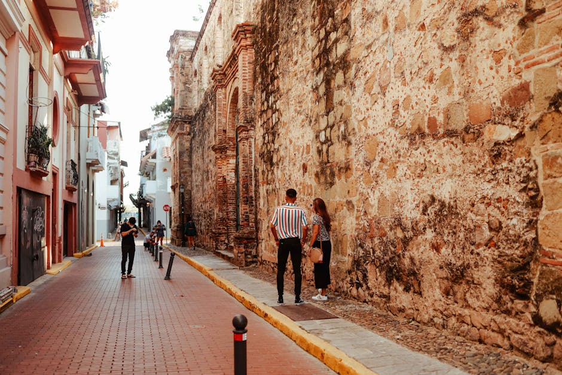

La Nostra Offerta Editoriale
Tutto ciò che serve per pianificare perfette vacanze Italia, dalla carta stampata all'ispirazione digitale.

La Rivista Mensile
Reportage approfonditi e fotografie mozzafiato sulle più affascinanti destinazioni turistiche. Ogni mese, nuove prospettive per un turismo lento e consapevole attraverso le regioni più belle.

Guide Tematiche Speciali
Edizioni monografiche dedicate ai tesori nascosti. Dalle atmosfere senza tempo dei piccoli borghi italiani alla maestosità architettonica delle grandi città d'arte, raccontate da esperti.
Itinerari Viaggio Digitali
Archivi e percorsi curati nei minimi dettagli, pronti per essere seguiti. Suggerimenti pratici, mappe e consigli esclusivi per trasformare ogni spostamento in una vera e propria esplorazione.